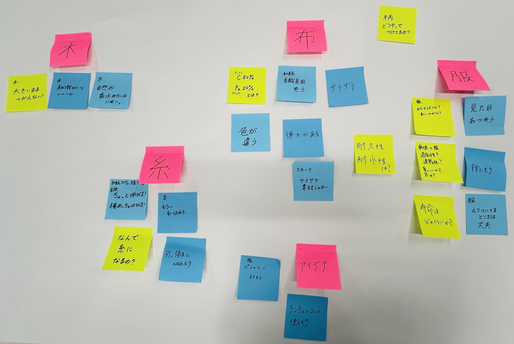

２０２５年６月１３日
- パタゴニアによるプレゼンテーション(サーキュラーに関する取り組みも含む)
- 経営学部山本ゼミ学生による提案発表
- 質疑応答
- グループディスカッション
パタゴニアによるプレゼンテーション
パタゴニアとは
- パーパス『地球を救うためのビジネスを営む』
- 残金を非営利２団体に渡し、利益を気候変動対策へ当てる
- オーナーは『地球』
- ５つの価値観【質・誠実さ・環境主義・公正さ・従来のやり方にとらわれない】
アパレル業界の課題
- 服の製造は世界の１０％の汚染原因
- プラスチック製品の６０～７３％が焼却消費で循環していない
パタゴニアの取り組み
- １００％リサイクルナイロンを使用
- 製品寿命の延長と新品製造の抑制を２０３０年までの目標に掲げる
- 不要なものを取り除き、一過性の流行を追わない
- 最後まで製品に責任を持つ『End of Life』対応。(３Ｒができる技術開発の投資)
サーキュラリティに関する具体的な取り組み
■Worn Wear(古着事業)
・サービス内容
- オンライン買い取り・販売(ラグタグ)
- ポップアップストア(古着屋化イベント)
- 常設古着コーナー(梅田・東京京橋・鎌倉(女性限定))
・特徴
- 修理・洗濯・サイズ交換対応
- ストーリータグ：前のオーナーの思い出を次のユーザーに引き継ぐ
- キャッチコピー：「新品よりずっといい」
・プレラブドリア
- 「愛されたことのあるリア」というネーミング
- 中古品に愛着や価値を生む
- ストーリー付きで付加価値向上
・課題
- 日本では古着に対する衛生面の抵抗感
- ストーリーと製品マッチングの難しさ
経営学部山本ゼミ学生による提案発表(服の回収促進アイデア)
現状の課題
- ６８％が燃えるゴミ。古着回収はわずか７％。
- 回収ボックスを探す手間があり、多くが燃えるゴミに出される。
- 環境意識だけでは行動を促しにくい
アイデア
１．回収を『楽しい体験』にする
- 例：『写ルンです』の現像体験を古着回収に応用
- 古着を持って行くと楽しみがある仕組みを作る
２．ポイント制度の導入
- 回収でポイント→非売品ワッペンと交換
- ワッペンは積み重ねると特別感が増す(例：MLB記念ワッペン)
３．フィードバック
- 「正しいこと」→「楽しい・かっこいいこと」に価値転換する
アイスブレイク「最近で１番暑いと感じたことは何ですか？」１人３０秒で共有
２０２５年のステップ→若者と企業がチームになってアクションを広げる。
テーマ「環共」・・・環境と共創する。
GOAL「未来の環境共生社会の当たり前を」
目指すスタイル「資源を“地産地環”する」・・・資源の価値の繋がりで、次元の向上に。
フォーカスする課題とアプローチ ①間伐材の有効活用②紙資源の循環③諸熱対策
【問題点】
・森林保全のために行われている間伐。そこで出てきた使われていない間伐材を紙の資源にする。
・リサイクル率・・・プラスチック６０％・紙製容器包装２５％。紙資源のリサイクル率が低い。
・近年猛暑が続いている。2029年の残暑も厳しい予想。
「紙を使う理由」・・・穴が開いている。多孔質で、熱の伝導率が低いから。
MISSION『紙糸・紙布を活用して諸熱対策に繋がるものをプロトタイプ』
ルール ①地域資源を優先し、再生可能素材を活用②必要な素材だけ使用し、無駄を省く③修理しやすい、持続可能なデザインを追求
※紙糸or紙布を何かしらで活用すること！
【スケジュール確認】
- ６月０６日 アイデアの方向性を固める
- ６月２７日 中間発表
- ７月１８日 最終発表(デモをお披露目)
優秀なプロトタイプは商品試作を検討
現状の課題→平均気温の上昇・熱中症患者の増加・森林伐採・CO2排出etc.
現状の対策→クールスポット・都市緑化etc.
【ダイイチさんの取り組み】
・企業ユニフォームの製造を行っている。エコ素材など環境配慮に力を入れ、「YSDGs」の認定を所持。
・サステナブルな取り組み４つ①商品開発②販促③扶養になったユニフォームの回収④その他・リサイクル・リメイク
・紙糸の参画→紙資源・間伐材を主に使用。
・和、い→裁断して紙糸化→ねじる→糸にする→編んで生地にして製品化
・熱中症リスクの高まりで、ユニフォーム業界の諸熱対策製品のニーズが高まっている。
・ファン付きウェア、ベルチュ(金属プレート)ウェア、冷却材(保冷剤を入れる)ウェアがある。
素材の可能性を探索
- ポストイットに書き出し
- グループでシェア
- ラベル付け
- つくれそうなもののアイデアを話し合う

青：気づき 黄色：問い ピンク：ラベル
【グループの話し合い・案出し】
外、なんで暑い？→熱が逃げない・直射日光・照返し・アスファルトが熱い
EXPO2027会場まで駅から２㎞…。
- 木の香水作りたい
- パジャマに良さそう
- 学校の制服(ネクタイやリボン)
- サンダル用靴下
- 日傘
- スマホケース
- ビル群みたいな壁を作り、ビル風を促す
- 屋根を作る
- アスファルトにウッドチップ
- テラスみたいな場所にすのこを置く
- パラソル・ベンチ→アスファルトの跳ね返しを防ぐ
- 涼しい色
- スタッフ用Tシャツ(緑色・トゥンクトゥンクをプリント)
- カメラケース(強度を上げて、軽くする。カビるから、通気性も上げる)
- 鞄
- 布で花や草を作る(枯れない花を２㎞に展示。本物も合わせて。)
間伐材を最初に触れたため、間伐材メインで話していたが、様々な案が出た。
次回までの宿題
１.身の回りの諸熱対策の事例を調べ(３つ)、アイデアをまとめてくる。→ワークシートに埋める。
２.紙製容器包装を調べて、Slackに写真をUp。